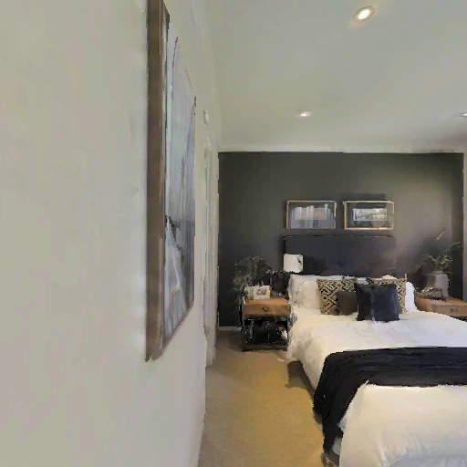

Evaluation in Zero-Shot Vision-and-Language Navigation in Continuous Environments
Guangzhao Dai1Qianru Sun1Qi Wu2Bin Zhu1,†
1 School of Computing and Information Systems, Singapore Management University
2 Australia Institute for Machine Learning
† Corresponding author and project lead
How far can a general-purpose model navigate using its own perception, reasoning, and decisions? Give GPT-6-Astra a monocular camera and basic actions through MCP. It decides when to observe, how to move, and when to stop.
Website & PDF updated 25 September 2026 · arXiv first release: 24 September 2026
Success rate81.3%
Ultra reasoning · monocular RGB
Path efficiency · SPL71.5%
Success weighted by path length
Over zero-shot methods+15.3pp
SR vs. SpatialAnt (66.0%)
Over trained methods+9.2pp
SR vs. Qwen-RobotNav (72.1%)
Comparisons use reported results with different evaluation subsets and system settings. They provide context for the model's performance; they are not a matched-condition ranking.
↗ Expand figureFigure 1 Strong zero-shot navigation performance with monocular RGB. Trained-method results use the full validation-unseen split; GPT-6-Astra uses R2R-CE-100. See scores and evaluation settings ↓Read the abstract +
We investigate whether GPT-6-Astra, a general-purpose foundation model, can navigate unfamiliar environments using its own perception, reasoning, and decision-making capabilities. Our evaluation focuses on zero-shot vision-and-language navigation in continuous environments (VLN-CE) through a minimal interface in the Codex harness, aiming to unleash GPT-6-Astra's full potential for navigation. Using monocular RGB, GPT-6-Astra decides when to observe, how to move, and when to stop, without navigation-specific fine-tuning, a trained waypoint predictor, or a pre-built scene map. Our evaluation yields four key findings and implications. First, GPT-6-Astra achieves strong zero-shot navigation performance using only monocular RGB observations. On R2R-CE-100, GPT-6-Astra (ultra reasoning) achieves a success rate of 81.3%, exceeding the strongest reported zero-shot and even train-based success rates by 15.3 and 9.2 percentage points, respectively. Second, GPT-6-Astra exhibits promising capabilities in interpreting multi-stage instructions, understanding the environment, and adjusting routes. Third, execution and goal-verification failures persist even with ultra reasoning. Fourth, these results motivate combining general-purpose model capabilities with navigation-specific expertise. Based on these findings, future VLN research should investigate which aspects of instruction interpretation, spatial understanding, and navigation decision-making general-purpose models can handle directly, and where navigation-specific learning can extend their capabilities. This includes exploring how spatial representations, navigation experience, and learned control skills can improve progress tracking, error recovery, and goal verification while preserving the flexibility to adjust routes.
01 / Four findings
Strong performance. A closer look at how it navigates.
From task-level outcomes to the observations and actions behind them.
01
Strong zero-shot navigation from monocular RGB.
Success reaches 75.7% with medium reasoning and 81.3% with ultra reasoning, without navigation-specific fine-tuning, a trained waypoint predictor, or a pre-built scene map in our evaluation.
Promising instruction interpretation, environment understanding, and route adjustment.
Successful trajectories have median nDTW of 90.3–91.0% across ultra runs. Recorded interactions show additional observations, returns to earlier locations, and changes in route or movement direction.
Combine general-purpose capabilities with navigation expertise.
Which capabilities can the model provide directly? Where can spatial representations, navigation experience, and learned control skills extend them while preserving flexible route adjustment?
↗ ExpandFigure 2 The minimal navigation interface.
01 / Look
observe()
Returns the current 512 × 512 RGB view. The model chooses when another observation is useful.
02 / Act
step(actions)
Executes an ordered sequence of basic actions and reports execution counts, remaining budget, and termination status.
Forward 0.25 mTurn left / right 15°Tilt camera up / down 30°STOP
A new RGB view requires another observe() call. Scene maps, reference paths, goal coordinates, global poses, and depth are unavailable through this interface.
100 tasks10 unseen scenes
500 actionsPer-episode budget
2,400 secondsPer-episode time limit
STOP within 3 mRequired for success
03 / Navigation performance
81.3% success. One monocular camera.
Both reasoning settings use the same R2R-CE-100 tasks, task prompt, and navigation tools.
GPT-6-Astra on R2R-CE-100
Reasoning effort
NE ↓ m
OSR ↑ %
SR ↑ %
SPL ↑ %
Medium
3.0 ± 0.4
80.7 ± 2.1
75.7 ± 1.5
65.6 ± 2.1
Ultra
2.9 ± 0.2
83.7 ± 1.5
81.3 ± 2.5
71.5 ± 1.7
Mean ± s.d. over three runs per reasoning setting. Text and figures use means unless stated otherwise. NE: final goal distance; OSR: entering the goal radius at any point; SR: successful completion; SPL: success weighted by path length.
Explore all reported methods 48 rows+
Report Table 1 · reported navigation results
Method
Setting
Split
View
NE ↓
OSR ↑
SR ↑
SPL ↑
ScaleVLN
Trained
Full
Pano.
4.8
—
55.0
51.0
ETPNav
Trained
Full
Pano.
4.7
65.0
57.0
49.0
BEVBert
Trained
Full
Pano.
4.6
67.0
59.0
50.0
HNR
Trained
Full
Pano.
4.4
67.0
61.0
51.0
Energy
Trained
Full
Pano.
4.7
65.0
58.0
50.0
g3D-LF
Trained
Full
Pano.
4.5
68.0
61.0
52.0
NavFoM
Trained
Full
Pano.
4.6
72.1
61.7
55.3
ABot-N0
Trained
Full
Pano.
3.8
70.8
66.4
63.9
OmniNav
Trained
Full
Pano.
3.7
74.6
69.5
66.1
Qwen-RobotNav-8B
Trained
Full
Pano.
3.5
78.5
72.1
66.6
AstraNav-World
Trained
Full
Pano.
3.9
73.9
67.9
65.4
NaVid
Trained
Full
Mono.
5.7
49.2
41.9
36.5
Uni-NaVid
Trained
Full
Mono.
5.6
53.3
47.0
42.7
NaVILA
Trained
Full
Mono.
5.2
62.5
54.0
49.0
Aux-Think
Trained
Full
Mono.
5.9
54.9
49.7
41.7
Dynam3D
Trained
Full
Mono.
5.3
62.1
52.9
45.7
StreamVLN
Trained
Full
Mono.
5.0
64.2
56.9
51.9
DualVLN
Trained
Full
Mono.
4.1
70.7
64.3
58.5
InternVLA-N1
Trained
Full
Mono.
4.8
63.3
58.2
54.0
D3D-VLP
Trained
Full
Mono.
4.7
67.2
61.3
56.1
Image2Nav
Trained
Full
Mono.
4.0
72.9
66.3
61.5
Qwen-RobotNav-8B
Trained
Full
Mono.
4.4
72.7
65.7
59.6
NavGPT-CE-GPT4
Zero-shot
Full
Pano.
8.4
26.9
16.3
10.2
HSGM
Zero-shot
Full
Pano.
5.4
58.7
47.9
32.8
MapGPT-CE-GPT4o
Zero-shot
R2R-CE-100
Pano.
8.2
21.0
7.0
5.0
DiscussNav-GPT4
Zero-shot
R2R-CE-100
Pano.
7.8
15.0
11.0
10.5
Open-Nav-GPT4
Zero-shot
R2R-CE-100
Pano.
6.7
23.0
19.0
16.1
Three-Step Nav-GPT-5
Zero-shot
R2R-CE-100
Pano.
5.9
39.0
34.0
29.1
STRIDER-GPT-4o
Zero-shot
R2R-CE-100
Pano.
6.9
39.0
35.0
30.3
LaViRA-GPT-4o
Zero-shot
R2R-CE-100
Pano.
6.4 ± 0.28
43.3 ± 3.2
36.0 ± 1.7
28.3 ± 0.8
LaViRA-Gemini-2.5-pro
Zero-shot
R2R-CE-100
Pano.
6.5 ± 0.27
48.7 ± 2.1
38.3 ± 0.6
28.3 ± 0.9
O2C-Nav-Gemini-2.5-Pro
Zero-shot
R2R-CE-100
Pano.
5.8
65.0
49.3
30.9
EvoNav-GPT-4o
Zero-shot
R2R-CE-100
Pano.
6.0
35.0
30.0
24.9
EvoNav-Gemini-2.5-pro
Zero-shot
R2R-CE-100
Pano.
5.0
51.0
43.0
37.8
SmartWay-GPT-4o
Zero-shot
R2R-CE-100
Pano.
7.0
51.0
29.0
22.5
SmartWay-GPT-5.5
Zero-shot
R2R-CE-100
Pano.
5.2
60.0
44.0
35.0
AgenticNav-Gemini-2.5-pro
Zero-shot
R2R-CE-100
Pano.
5.9
63.0
49.0
33.2
AgenticNav-GPT-5.5
Zero-shot
R2R-CE-100
Pano.
5.2
65.0
55.0
48.4
SpatialNav
Zero-shot
Author-sampled
Pano.
5.2
66.0
64.0
51.1
SpatialAnt
Zero-shot
Author-sampled
Pano.
4.4
76.0
66.0
54.4
HarnessVLN-GPT-5.5
Zero-shot
—
Pano.
4.0
72.7
60.8
43.5
Fast-SmartWay-GPT-4o
Zero-shot
R2R-CE-100
F3+P
7.7 ± 0.42
—
27.8 ± 2.22
25.0 ± 2.70
CA-Nav
Zero-shot
Full
Mono.
7.6
48.0
25.3
10.8
AO-Planner
Zero-shot
Full
Mono.
7.0
38.3
25.5
16.6
DreamNav
Zero-shot
—
Mono.
7.1
41.0
32.8
29.0
GC-VLN
Zero-shot
Full
Mono.
7.3
41.8
33.6
16.3
GPT-6-Astra (medium reasoning)
Zero-shot
R2R-CE-100
Mono.
3.0 ± 0.4
80.7 ± 2.1
75.7 ± 1.5
65.6 ± 2.1
GPT-6-Astra (ultra reasoning)
Zero-shot
R2R-CE-100
Mono.
2.9 ± 0.2
83.7 ± 1.5
81.3 ± 2.5
71.5 ± 1.7
No methods match this search.
Full: complete validation-unseen split. Author-sampled: correspondence with Open-Nav's subset is unverified. Pano.: panoramic views; Mono.: monocular views; F3+P: three frontal views with initial or on-demand panoramas. LaViRA and Fast-SmartWay report mean ± s.d. over three and four runs. Missing or unverified values are shown as “—”. See Table 1 in the report for publications, score sources, and additional settings.
04 / Instruction following & route adjustment
Follow the instruction. Revisit. Adjust the route.
Successful trajectories generally agree closely with reference paths. The model also takes additional views and returns to earlier places during navigation.
90.3–91.0%
Median nDTW among successful trajectories
Range across the three ultra runs. nDTW measures agreement with the reference path; it does not score each individual instruction decision.
A successful route adjustment / EP42
Ultra · run 1
Instruction sequence Kitchen → small living area → bedroom on the left

t = 135Original RGB observation
Observation 1 / 4
Inspect a bedroom
After reaching a bedroom, the model checks whether the route matches the instructed sequence.
Next executed tool callTurn left × 6, forward × 4
Success · NE 0.7 m · nDTW 27.5% · SPL 41.2%
Selected observations from Figure 3; intermediate frames are omitted. t counts executed primitive actions. The return to the kitchen precedes successful completion, but the full trajectory includes a substantial detour.
View the route-following and adjustment analysis +
Figure 3 The three ultra runs contain 16, 16, and 12 trajectories with observed route or movement adjustments, of which 10, 6, and 7 succeed. These counts do not isolate the effect of adjustment. Of all successful trajectories, 9.0 ± 1.0% have nDTW below 50%.
Two forms of spatial selection
Order-based selection identifies a target among alternatives, such as the second room or rightmost doorway. Landmark-based selection identifies a target relative to a landmark, such as left of, between, or behind.
Ultra reasoning · navigation performance by instruction type
Instruction subset
Tasks
SR (%)
SPL (%)
nDTW (%)
Order-based selection
14
95.2 ± 8.2
77.3 ± 8.2
75.9 ± 3.2
Landmark-based selection
13
74.4 ± 11.8
69.0 ± 8.1
73.9 ± 2.0
Mean ± sample s.d. across three runs. Scores measure whole-task outcomes, not individual spatial decisions. Subsets may overlap and differ in scene layout and route difficulty.
05 / Failure modes & reliability
More reasoning. Persistent challenges.
Repeat evaluations distinguish a difficult task from a single unsuccessful execution.
62%
Always succeed
Successful in all six evaluations.
30%
Mixed outcomes
Success varies across evaluations.
8%
Always fail
Unsuccessful in all six evaluations.
100 distinct tasks, each evaluated three times with medium and three times with ultra reasoning.
↗ Expand figureFigure 4 Repeated evaluations distinguish persistent and variable failures. Selected cases show ineffective motion and an incorrect stopping location.
Route following
Plausible landmarks can lead to the wrong place.
In one ultra run, EP513 ends 14.5 m from the goal despite a plausible fireplace and seating match. The same task succeeds in the other two ultra runs.
Execution
Repeated movement does not ensure progress.
In EP176, eight forward actions produce identical RGB views. The episode later exhausts its action budget with 35.4 m navigation error.
Goal verification
Entering the goal area does not ensure a correct stop.
Across the ultra runs, 1–3 failures per run previously enter the success radius. Final location must still be checked against the instruction and route.
06 / Implications for embodied navigation
What can the model provide? What should navigation research add?
Prior VLN research supplies benchmarks and methods for visual grounding, memory, and action selection. The next question is how this expertise can extend general-purpose models.
Investigate which aspects of instruction interpretation, spatial understanding, and navigation decision-making general-purpose models can handle directly, and where navigation-specific learning can extend their capabilities.
01
Spatial representations
Relate current views to visited places and completed instruction steps. Preserve landmark relations and route history while allowing uncertain judgments to change.
Progress tracking & goal verification02
Navigation experience
Connect observations and actions with their outcomes through trajectory learning or demonstrations. Test which experiences remain useful across tasks and layouts.
Route choice & error recovery03
Learned control skills
Provide efficient movement and recovery routines that the model can select or revise. Use execution feedback to detect ineffective motion.
Efficient movement & reliable execution
Preserve the flexibility to observe and adjust routes.
These are directions for future work. Controlled comparisons should test each addition with the same model, tasks, observations, primitive actions, and budgets, while disclosing any added information.
Scope & open questions
What remains to be established
Broader transfer. Repeated runs establish repeatability on this fixed R2R-CE-100 set. Longer instructions, new environments, and other datasets remain to be evaluated.
Practical deployment. High inference cost and latency are current constraints. They may diminish as models and inference systems improve.
Training-data transparency. GPT-6-Astra is proprietary. Whether it was trained on navigation data, and how much, is unknown. Zero-shot here means no navigation-specific fine-tuning in our evaluation.
07 / Citation
Cite this work
The website and downloadable PDF reflect the latest V2 update. The arXiv link provides the public submission record.
BibTeX
@misc{dai2026gpt6astra,
title = {GPT-6-Astra Lights Up Embodied Navigation:
Evaluation in Zero-Shot Vision-and-Language
Navigation in Continuous Environments},
author = {Guangzhao Dai and Qianru Sun and Qi Wu and Bin Zhu},
year = {2026},
eprint = {2609.29861},
archivePrefix = {arXiv},
primaryClass = {cs.RO},
url = {https://arxiv.org/abs/2609.29861}
}
{kind=link}
{kind=link}
{kind=link}
{kind=link}